01កល្បសព្ទ · Same soundកល្បសព្ទ
កល្បសព្ទ ជាពាក្យមានសូរដូចគ្នា ប៉ុន្តែអត្ថន័យផ្សេងគ្នា។
កល្បសព្ទ: words that sound alike but mean different things.
Same sound, same meaning, opposite meaning · មេរៀនទី ១២ · Lesson 12 of ភាសាខ្មែរ កម្រិត ១
ពាក្យខ្មែរមានស្រទាប់៖ ពាក្យធម្មតា ពាក្យសុភាព និងពាក្យបាលី-សំស្រ្កឹតផ្លូវការ។ ជ្រើសរើសតាមអ្នកនិយាយដោយ។
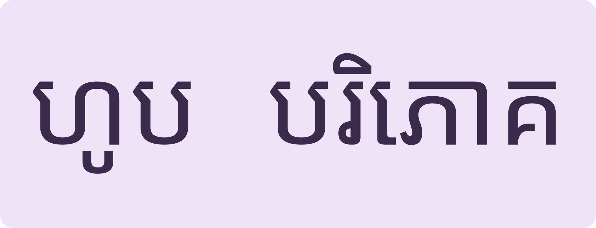
ពីផ្ទះទៅព្រះវិហារFrom home talk to temple talk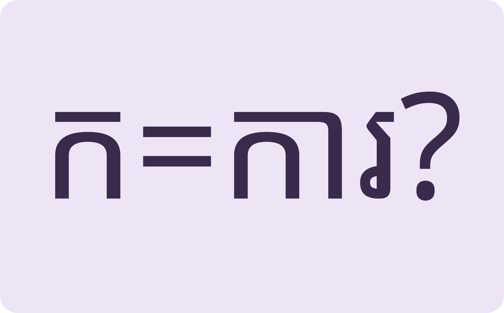
សូរដូច ន័យខុសSame sound, different meaning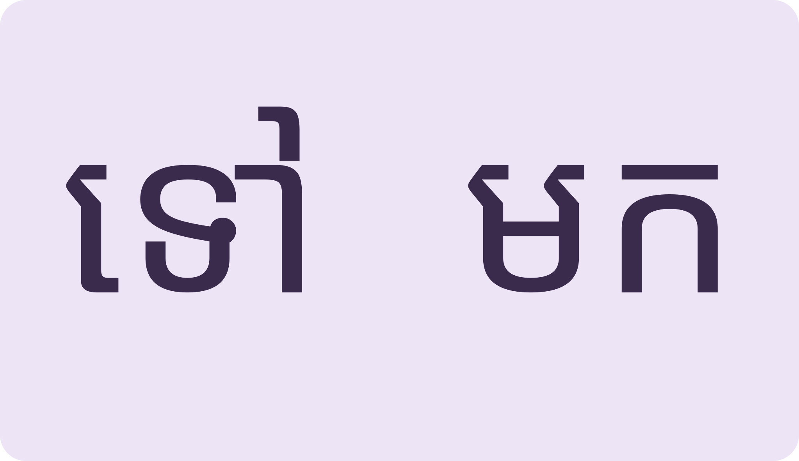
ពាក្យផ្ទុយគ្នាWords that face each otherSame sound ≠ same word; pick the polite level; know opposites; then read a work contract.
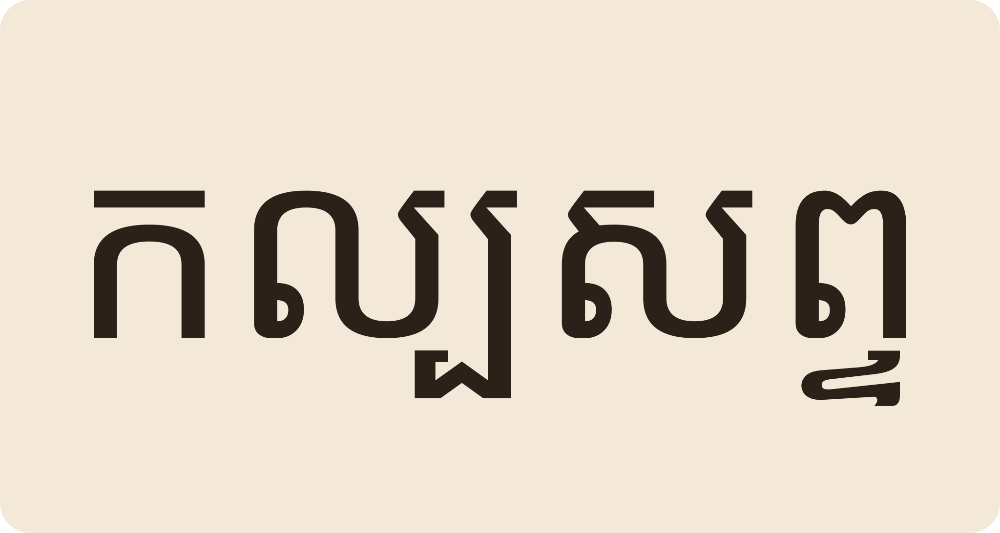
Space listen · ← → move · K show text
កល្បសព្ទ ជាពាក្យមានសូរដូចគ្នា ប៉ុន្តែអត្ថន័យផ្សេងគ្នា។
កល្បសព្ទ: words that sound alike but mean different things.
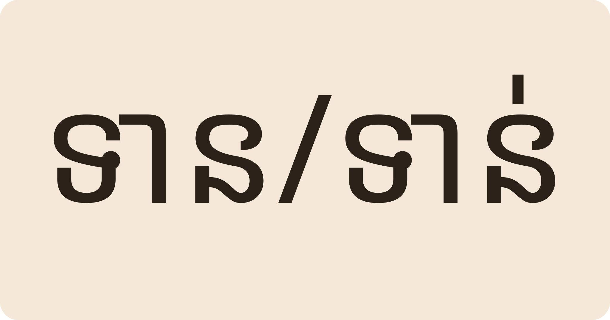
«ព័ត៌មានទាន់ហេតុការណ៍» breaking news។ «ទាន» giving ផ្សេង «ទាន់» timely ផ្សេង។
ទាន (giving) vs ទាន់ (timely): ព័ត៌មានទាន់ហេតុការណ៍ = breaking news.
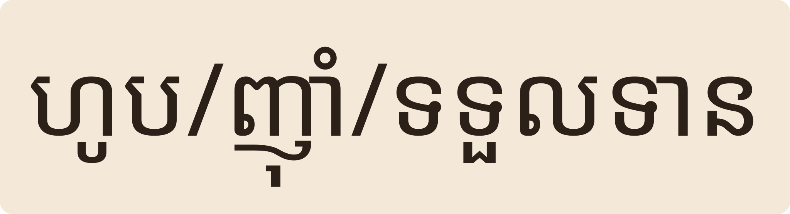
«ហូប» ធម្មតា «ញ៉ាំ» ស្និទ្ធស្នាល «ទទួលទាន» សុភាព «បរិភោគ» សម្រាប់ព្រះសង្ឃ។
ហូប plain, ញ៉ាំ intimate, ទទួលទាន polite, បរិភោគ for monks.
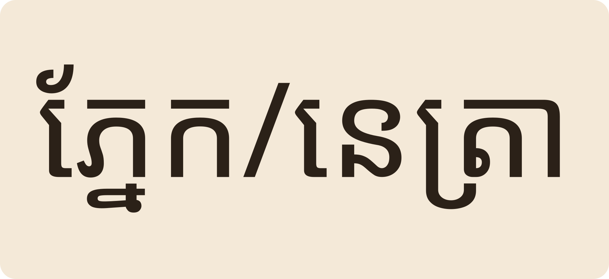
«ភ្នែក» eye «នេត្រា/ចក្ខុ» formal។ «គង្គា» river ជាពាក្យបាលីនៃ «ទឹក»។
ភ្នែក vs formal នេត្រា/ចក្ខុ; គង្គា is the Pali “river” for plain ទឹក.
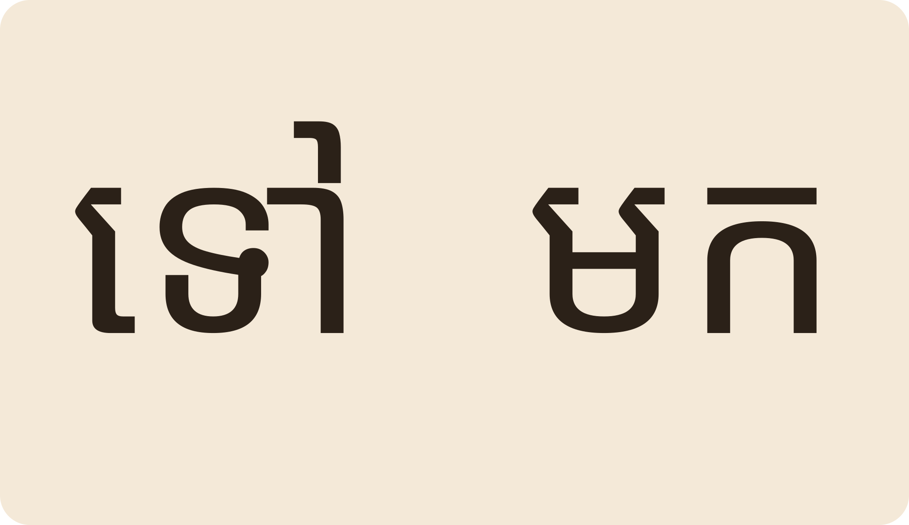
បដិសព្ទ ជាពាក្យផ្ទុយគ្នា៖ ទៅ≠មក ស≠ខ្មៅ លឿន≠យឺត។
បដិសព្ទ are opposites: ទៅ go ≠ មក come, ស white ≠ ខ្មៅ black, លឿន fast ≠ យឺត slow.
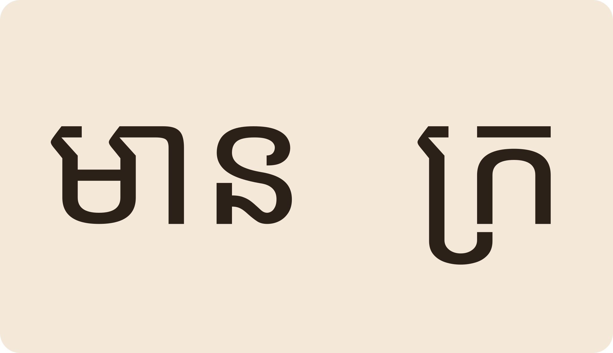
«មាន» rich ≠ «ក្រ» poor។ «ចាស់» old ≠ «ថ្មី» new។ «ឧស្សាហ៍» hardworking ≠ «ខ្ជិល» lazy។
មាន rich ≠ ក្រ poor; ចាស់ old ≠ ថ្មី new; ឧស្សាហ៍ diligent ≠ ខ្ជិល lazy.
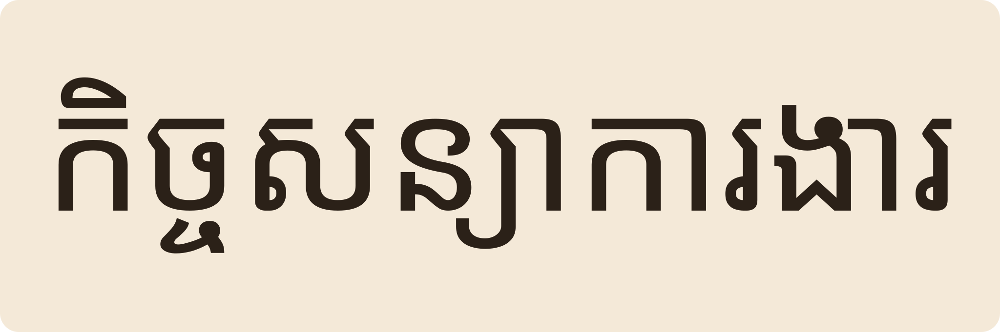
កិច្ចសន្យាការងារ មានឈ្មោះនិយោជក មុខងារ ទីតាំង ប្រាក់ឈ្នួល និងម៉ោងធ្វើការ។
A work contract lists employer, role, location, wages and working hours.
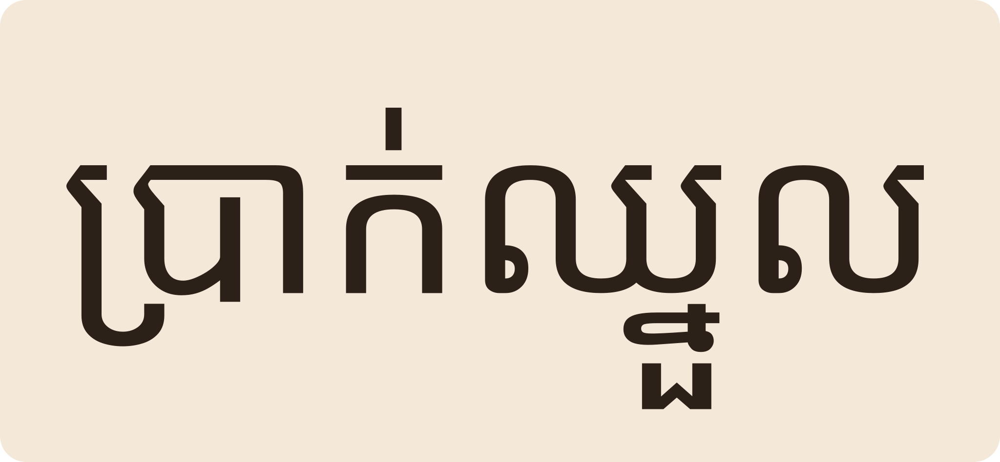
កម្មករនិយោជិតមានសិទ្ធិឈប់សម្រាក និងការជូនដំណឹងមុនបណ្តេញចេញ។
Workers have rights to leave and to notice before dismissal.
បាន តែឆ្ងល់ពេក។ «ញ៉ាំ» សម្រាប់មិត្ត «ទទួលទាន» សម្រាប់អ្នកធំ «បរិភោគ» សម្រាប់ព្រះសង្ឃ។
It would sound odd. ញ៉ាំ for friends, ទទួលទាន for elders, បរិភោគ for monks.
ជ្រើសស្រទាប់ពាក្យតាមអ្នកនិយាយ។
«ខ្ជិល» ត្រូវ។ សរសេរ «ខ្លិល» គឺកំហុសដែលជួបញឹក។
ខ្ជិល is correct; ខ្លិល is a common misspelling.
«ទូន្មាន» to advise gently «អប់រំ» to educate «ណែនាំ» to instruct/introduce។
ទូន្មាន gentle advice, អប់រំ education, ណែនាំ instruction or introduction.
ទាំងពីរ។ «និយោជក» ជាអ្នកជួល «កម្មករនិយោជិត» ជាអ្នកធ្វើការ។
Both. និយោជក is the employer; កម្មករនិយោជិត the employee.
ជំនាញ និងការធ្លាប់ជួបក្នុងការងារ experience។
Experience — skills and things you have gone through at work.
Tap a word's play button to hear it. Hide one side, then recall it before you tap to check.
កល្បសព្ទ ជាពាក្យមានសូរដូចគ្នា ប៉ុន្តែអត្ថន័យផ្សេងគ្នា។ «ព័ត៌មានទាន់ហេតុការណ៍» breaking news។ «ទាន» giving ផ្សេង «ទាន់» timely ផ្សេង។
កល្បសព្ទ: words that sound alike but mean different things. ទាន (giving) vs ទាន់ (timely): ព័ត៌មានទាន់ហេតុការណ៍ = breaking news.
«ហូប» ធម្មតា «ញ៉ាំ» ស្និទ្ធស្នាល «ទទួលទាន» សុភាព «បរិភោគ» សម្រាប់ព្រះសង្ឃ។ «ភ្នែក» eye «នេត្រា/ចក្ខុ» formal។ «គង្គា» river ជាពាក្យបាលីនៃ «ទឹក»។
ហូប plain, ញ៉ាំ intimate, ទទួលទាន polite, បរិភោគ for monks. ភ្នែក vs formal នេត្រា/ចក្ខុ; គង្គា is the Pali “river” for plain ទឹក.
បដិសព្ទ ជាពាក្យផ្ទុយគ្នា៖ ទៅ≠មក ស≠ខ្មៅ លឿន≠យឺត។ «មាន» rich ≠ «ក្រ» poor។ «ចាស់» old ≠ «ថ្មី» new។ «ឧស្សាហ៍» hardworking ≠ «ខ្ជិល» lazy។
បដិសព្ទ are opposites: ទៅ go ≠ មក come, ស white ≠ ខ្មៅ black, លឿន fast ≠ យឺត slow. មាន rich ≠ ក្រ poor; ចាស់ old ≠ ថ្មី new; ឧស្សាហ៍ diligent ≠ ខ្ជិល lazy.
កិច្ចសន្យាការងារ មានឈ្មោះនិយោជក មុខងារ ទីតាំង ប្រាក់ឈ្នួល និងម៉ោងធ្វើការ។ កម្មករនិយោជិតមានសិទ្ធិឈប់សម្រាក និងការជូនដំណឹងមុនបណ្តេញចេញ។
A work contract lists employer, role, location, wages and working hours. Workers have rights to leave and to notice before dismissal.
Q. និយាយ «បរិភោគ» ជាមួយមិត្តបានទេ?
Q. Can I say បរិភោគ to a friend?
A. បាន តែឆ្ងល់ពេក។ «ញ៉ាំ» សម្រាប់មិត្ត «ទទួលទាន» សម្រាប់អ្នកធំ «បរិភោគ» សម្រាប់ព្រះសង្ឃ។
A. It would sound odd. ញ៉ាំ for friends, ទទួលទាន for elders, បរិភោគ for monks.
Q. «ខ្លិល» ឬ «ខ្ជិល» ត្រូវ?
Q. Is lazy spelled ខ្លិល or ខ្ជិល?
A. «ខ្ជិល» ត្រូវ។ សរសេរ «ខ្លិល» គឺកំហុសដែលជួបញឹក។
A. ខ្ជិល is correct; ខ្លិល is a common misspelling.
Q. «ទូន្មាន» «អប់រំ» «ណែនាំ» ខុសគ្នាយ៉ាងណា?
Q. Difference of ទូន្មាន / អប់រំ / ណែនាំ?
A. «ទូន្មាន» to advise gently «អប់រំ» to educate «ណែនាំ» to instruct/introduce។
A. ទូន្មាន gentle advice, អប់រំ education, ណែនាំ instruction or introduction.
Q. «និយោជក» និង «កម្មករ» នរណាជាអ្នកចុះកិច្ចសន្យា?
Q. Who signs — the employer or the worker?
A. ទាំងពីរ។ «និយោជក» ជាអ្នកជួល «កម្មករនិយោជិត» ជាអ្នកធ្វើការ។
A. Both. និយោជក is the employer; កម្មករនិយោជិត the employee.
Q. «បទពិសោធន៍» ជាអ្វី?
Q. What is បទពិសោធន៍?
A. ជំនាញ និងការធ្លាប់ជួបក្នុងការងារ experience។
A. Experience — skills and things you have gone through at work.
មុនចុះហត្ថលេខា សូមអានឱ្យខ្ញុំស្តាប់ផង។
Before I sign, please read this to me.
ប្រាក់ឈ្នួល និងថ្ងៃឈប់សម្រាករបស់ខ្ញុំយ៉ាងណា?
What are my wages and leave days?
Say it in your head first, then tap the box to check.